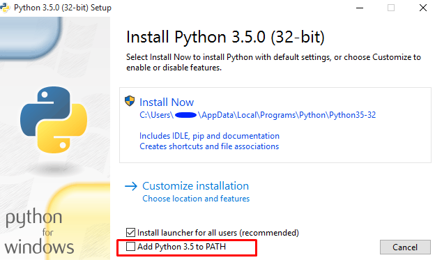

Python es un lenguaje de programación multiparadigma - Soporta programación orientada a objetos, programación imperativa y en menor medida programación funcional.
Es un lenguaje:
interpretado: La computadora va traduciendo el codigo a binario a medida que se ejecuta; esta traducción no se guarda.tipado dinamico: Una variable puede tomar valores de distintos tipos (numeros, textos, listas …)multiplataforma: Puede ser ejecutado en muchos sistemas informaticos distintos mientras exista un interprete de el sistema.Python3:
Editor de texto:

$ python >>> quit() $
http://jupyter.org/install.html
$ python -m pip install --upgrade pip $ python -m pip install jupyter $ jupyter notebook #Ingresamos a una interface web
>>> 123 + 222 #Adición de enteros 345 >>> 1.5 * 4 # Multiplicación de punto flotante 6.0 >>> 2 ** 100 # 2 elevado al exponente 100 1267650600228229401496703205376 >>> import math >>> math.pi 3.141592653589793 >>> math.sqrt(85) 9.219544457292887
Strings son usados para guardar información textual y como colección de bytes (Como el contenido de una imagen).
Es el primer ejemplo de lo que llamamos en python, secuencia, una colección de elementos ordenados posicionados con respectos de otros.
>>> C = 'Control' >>> len(C) 7 >>> C[0] 'C' >>> C[1] 'o'
>>> C[len(C)-1] 'l' >>> C[-1] 'l' >>> C[-2] 'o' >>> C 'Control' >>> C[1:3] 'on' >>> C[1:] 'ontrol' >>> C[:6] 'Contro'
>>> C 'Control' >>> C + ' System' 'Control System' >>> C 'Control' >>> C * 8 'ControlControlControlControlControlControlControlControl'
>>> C 'Control' >>> C[0]='Z' TypeError: 'str' object does not support item assignment >>> C = 'Z' + C[1:] >>> C 'Zontrol'
>>> C = 'Control'
>>> C.find('tr')
3
>>> C.replace('tr', 'XYZ')
'ConXYZol'
>>> C
'Control'
Las listas son colecciones ordenadas de objectos de tipo arbritrario. A diferencia de los strings, estos si son mutables.
>>> L = [1, 'Control', 10.5] >>> len(L) 3 >>> L[0] 1 >>> L[:-1] [1, 'Control'] >>> L + [4,5,6] [1, 'Control', 10.5, 4, 5, 6] >>> L [1, 'Control', 10.5]
>>> L.append('SI')
>>> L
[1, 'Control', 10.5, 'SI']
>>> L.pop(2)
10.5
>>> L
[1, 'Control', 'SI']
>>> M.reverse()
['SI', 'Control', 1]
>>> M = ['bb', 'aa', 'cc']
>>> M.sort()
>>> M
['aa', 'bb', 'cc']
>>> M = [[1, 2, 3], [4, 5, 6], [7, 8, 9]] >>> M[1] [4, 5, 6] >>> M[1][2] 6
Comprehensions>>> col2 = [fila[1] for fila in M] >>> col2 [2,5,8] >>> [fila[1] + 1 for fila in M] [3,6,9] >>> [fila[1] for fila in M if fila[1] % 2 == 0] [2, 8] ----- >>> diagonal = [M[i][i] for i in [0, 1, 2]] >>> diagonal [1, 5, 9]
Comprenhensions>>> list(range(4)) [0,1,2,3] >>> list(range(-6,7,2) [-6, -4, -2, 0, 2, 4, 6] >>> [[x ** 2, x ** 3] for rang(4)] [[0, 0], [1, 1], [4, 8], [9, 27]] >>> [[x, x / 2, x * 2] for x in range(-6,7,2) if x>0]
Los diccionarios son una coleccion de otros objetos pero guardados en relacion a ciertas llaves
>>> D = {'nombre': 'Albert', 'edad': 26, 'apellidos': "Castellano Moreno"}
>>> D['nombre']
'Albert'
>>> D['edad'] += 1
>>> D
{'nombre': 'Albert', 'edad': 27, 'apellidos': 'Castellano Moreno'}
-----
>>> D = {}
>>> D['calle'] = 'Las Oropendolas'
>>> D['numero'] = 149
>>> D
{'calle': 'Las Oropendolas', 'numero': 149}
Gracias ˊ・ω・ˋ